Sody (Sound + Body) is an intelligent fitness coach for everyday people — including people with aches, chronic conditions, desk jobs, and rough days. Built on the principle that fitness should adapt to physical limits, Sody dynamically modifies every session so users build strength without risking injury. It generalizes beyond gym lifting to any physical activity, and it's social: friends back each other, share goals, and move together.
Not a logger with an AI sticker. The coach listens (pain, energy, sleep, cycle, flare-ups) before it prescribes.
Everything orbits a goal: solo or shared, each keeps exactly one workout queued next. No "what now?".
A gym session, a run, a 3-minute desk stretch, a breathing break — all attributable to your goal.
If the loop feels effortless, the app wins. Most of your design energy should go here.
28–45 · sits 8h/day · neck & lower-back aches. Wants 15-minute sessions and desk micro-breaks. Allergic to gym-bro energy.
25–60 · scoliosis / chronic pain. Needs the coach to genuinely respect pain regions and flare-ups. Health privacy is sacred.
20–35 · trains 3–4×/week. Wants progressive overload, PRs, Hevy-speed logging, and sharing with friends.
25–45 · marathon/Hyrox with friends. Wants a shared goal, countdown, group progress — progress, not ranking.
30–55 · fell off for months. Needs kind comebacks, weekly (forgiving) streaks, zero guilt.
You will find more. Kill our darlings — with a reason.
| Area | Screens & surfaces |
|---|---|
| Tabs | Social · Home · Goals · Profile (floating bar; hidden in auth/onboarding & full-screen flows) |
| Auth & onboarding | Welcome · sign in/up · email OTP · SSO (Apple/Google/Facebook) · 4-step onboarding (you → first goal → health → lifestyle) · AI profile Q&A |
| Home | Greeting · Next-up hero · other goals row · quick actions (Log my own / Breather) · today's context · desk section (work hours only) · This Week AI board · flare-up & cycle chips |
| Training | Check-in (4 steps + body map) · Adjust-for-today · Session ready (phases, reorder, citations) · Live session (sets, swipes, rest timer) · Recap · Build-your-own · Breather |
| Goals | List · create (7 categories + event presets) · detail (program timeline, next workout, members, activity, log progress) · join by code/link |
| Library | ~123 exercises · body-part picker · search · custom exercises · camera equipment scan · exercise detail (GIF, records, history, coach chat) |
| Social | Feed · reactions/comments/reposts · Try this workout · leaderboard · trending · people-to-back · search · notifications inbox · share composer · public profiles · block/report |
| Progress | Profile hub · heatmap (4 metrics, 24 months) · Journey (15 achievements + PRs) · history · routines · weekly streak sheet |
| Health | Health context (private) · flare-up mode · cycle log & phases · posture survey · training setup (equipment, places, weekly rhythm) |
| Settings | Grouped index · privacy (per-section toggles + post audience) · notifications · theme/units/motion/text-size · data & AI (export, clear memory, deactivate) · account (sign out, delete) |
Full stories with acceptance criteria live in docs/design/irene/sody-user-stories.md and as one Trello card per epic in the "user stories irene" list. Suggested order below.
| # | Epic | What it covers |
|---|---|---|
| 1 | Brand shell & theming | Design system, tab shell, dark/light, accessibility, state library |
| 3 | Home: Next up & today | Hero card, session states, desk section, This Week AI board, quick actions |
| 4 | Check-in & Adjust | Energy/sleep/pain body map/stress/type/time · Home-or-Gym suggestion · lightweight adjust |
| 5 | Session ready | Phase plan review, reasoning strip, remove/replace/reorder, citations |
| 6 | Live session | The money screen: set logging, swipe clone/delete, tick-to-green, rest timer pill, coach comments |
| 7 | Recap & share | Stats, PRs, AI note, goal attribution, save-as-routine, share composer |
| 8 | Goals | Solo + shared, invites, program timeline, members board, progress logging |
| 9 | Library & builder | Catalog, custom exercises, camera scan, builder, exercise detail + coach chat |
| 10 | Social | Feed, backing graph, try-workout, discover strips, inbox, safety |
| 11 | Profile & journey | Progress hub, heatmap, weekly streaks, achievements, PRs, history, routines |
| 2 | Auth & onboarding | Welcome → first goal → health context → first plan in <3 min |
| 12 | Health layer | Flare-ups, cycle, desk breaks, breather, training setup |
| 13 | Settings & privacy | Grouped settings, privacy previews, notifications, data & account |
| 14 | The coach, unified | One personality across 13 AI surfaces; waiting & failure states; trust |
| 15 | Design-ahead | Planned-sessions calendar, predicted soreness, weather, group live sessions, partner matching, Spotify, wearables |
Queued plan retuned to energy, pain, and time in seconds — with the reason stated in one line.
One toggle: the coach eases off flagged regions everywhere until you're ready.
Opt-in, private, phase-aware suggestions with kind language.
2–5 minute chair/standing resets matched to your trouble spots, work-hours only.
Shared goals where the group advances together and each member's plan adapts personally.
Research citations behind the plan. The coach shows its work.
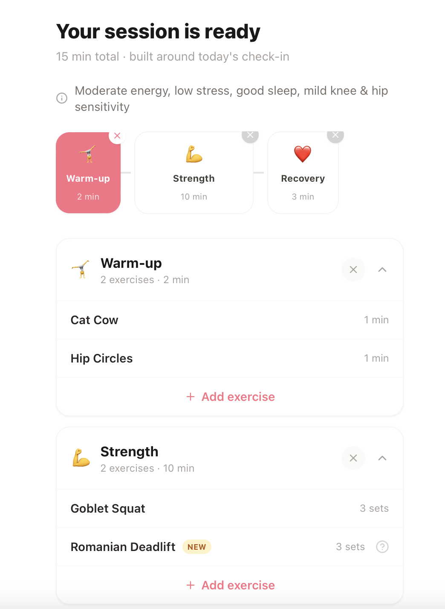
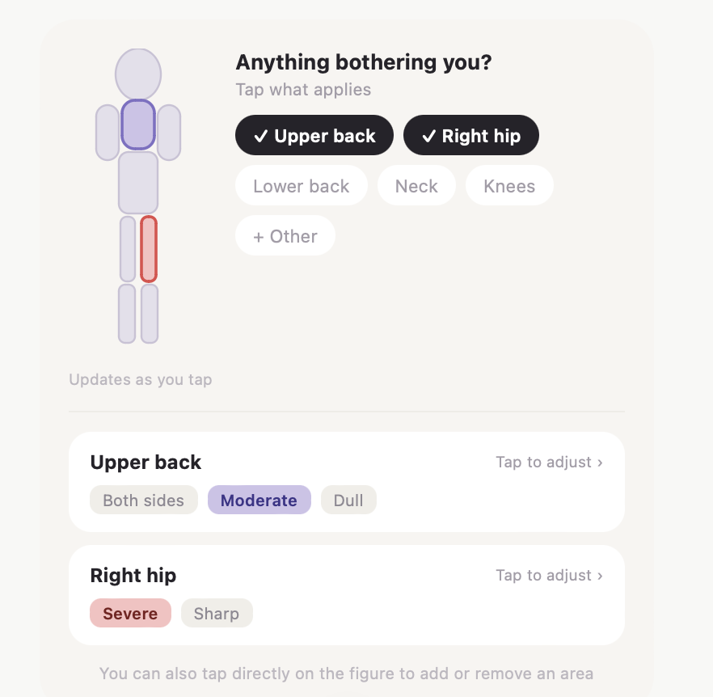
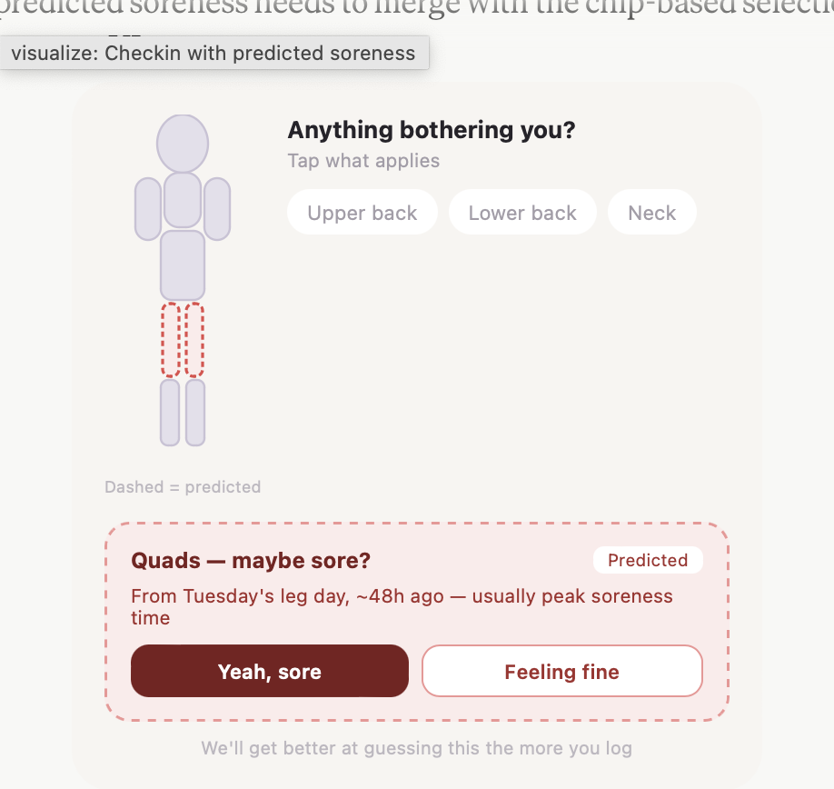
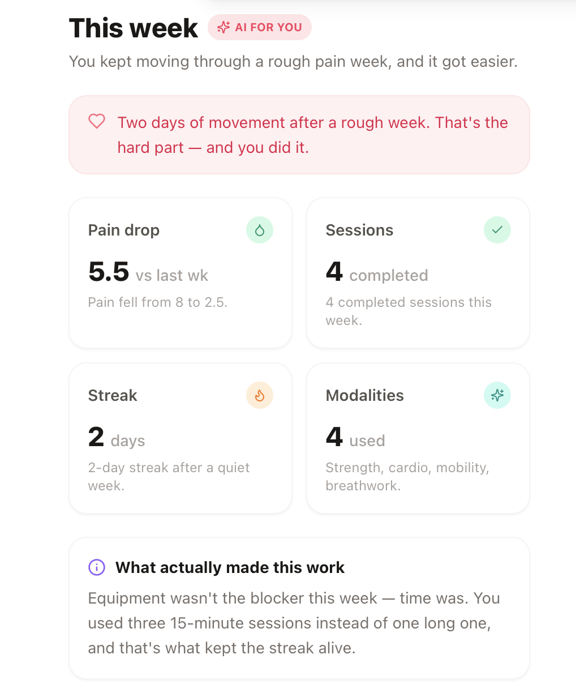
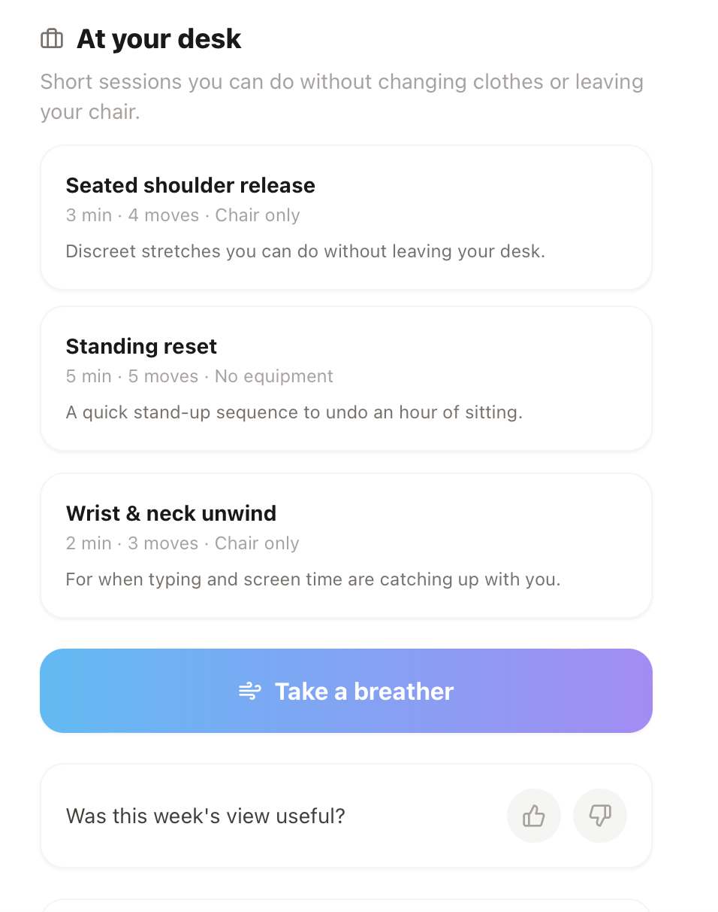
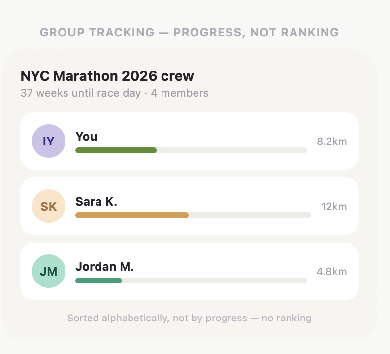
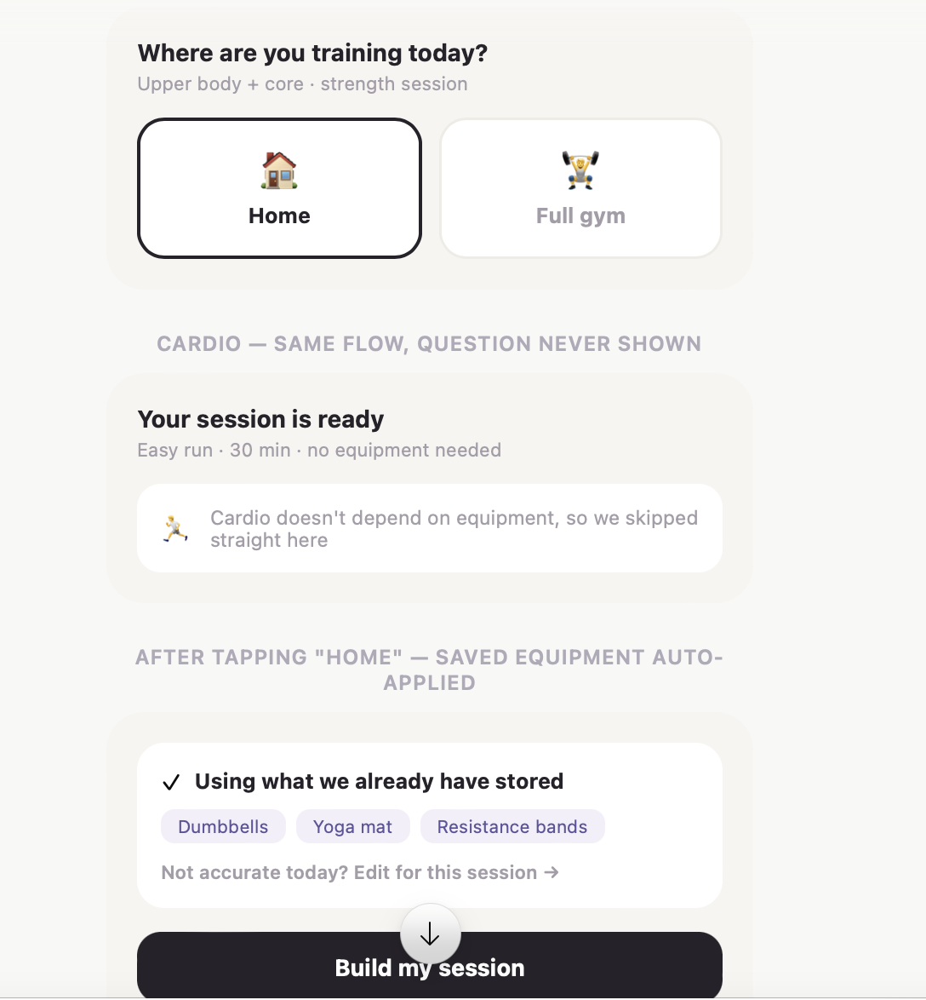
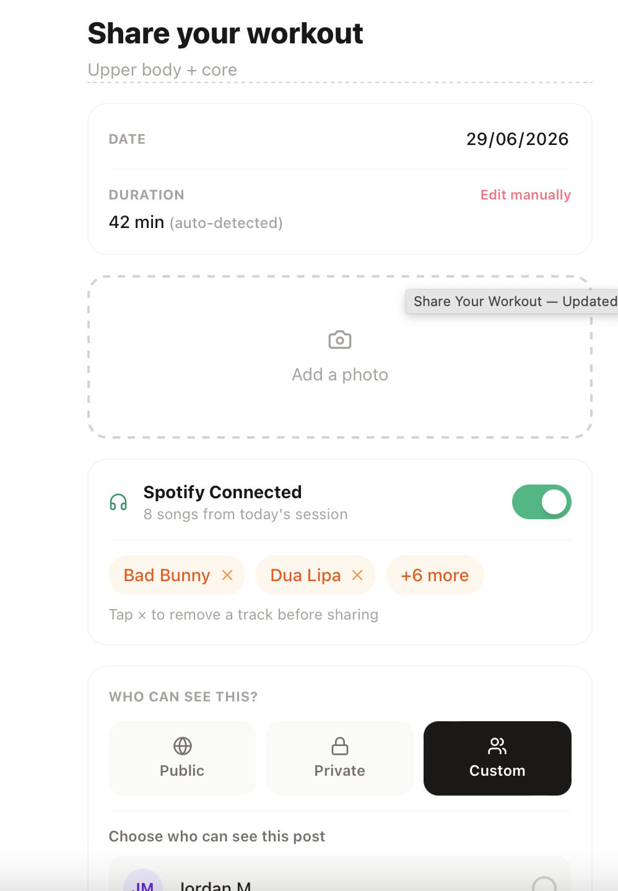
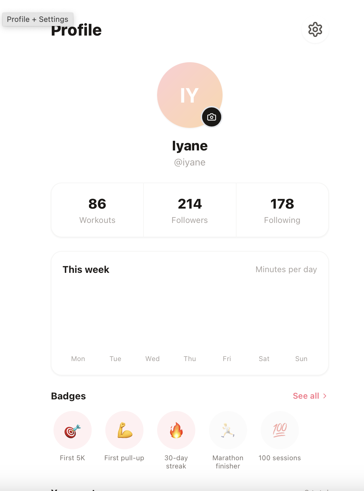
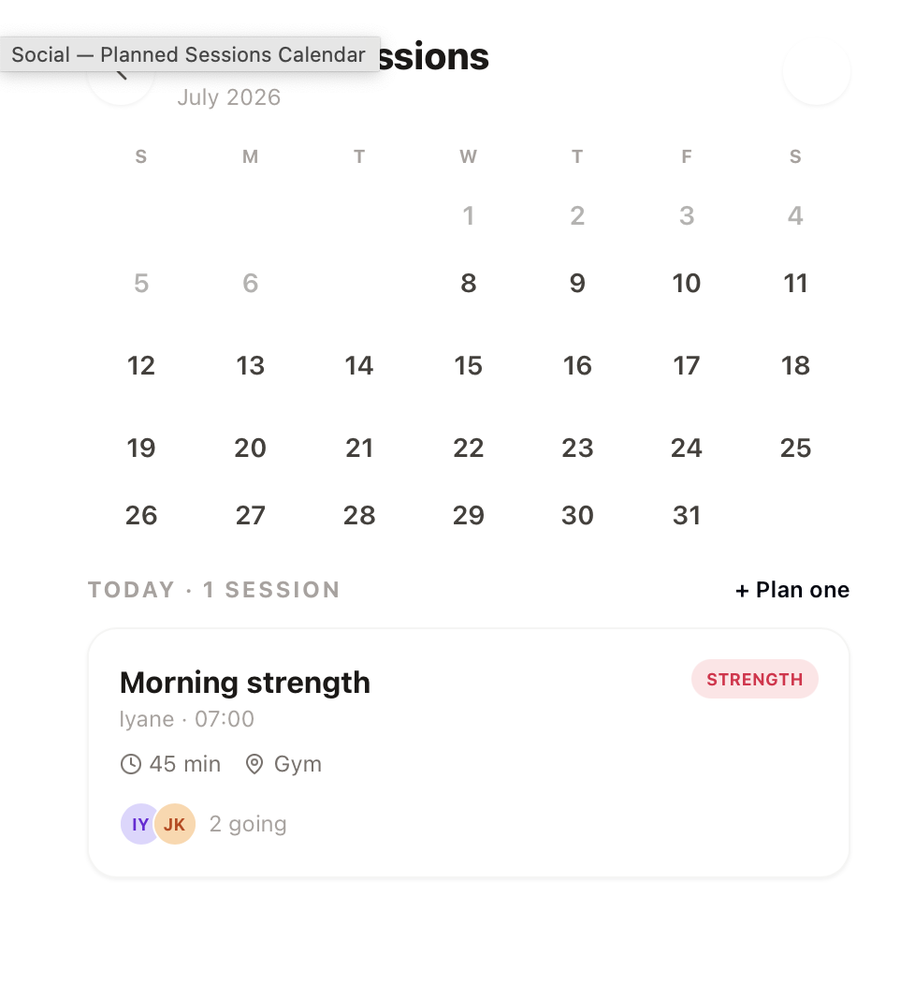
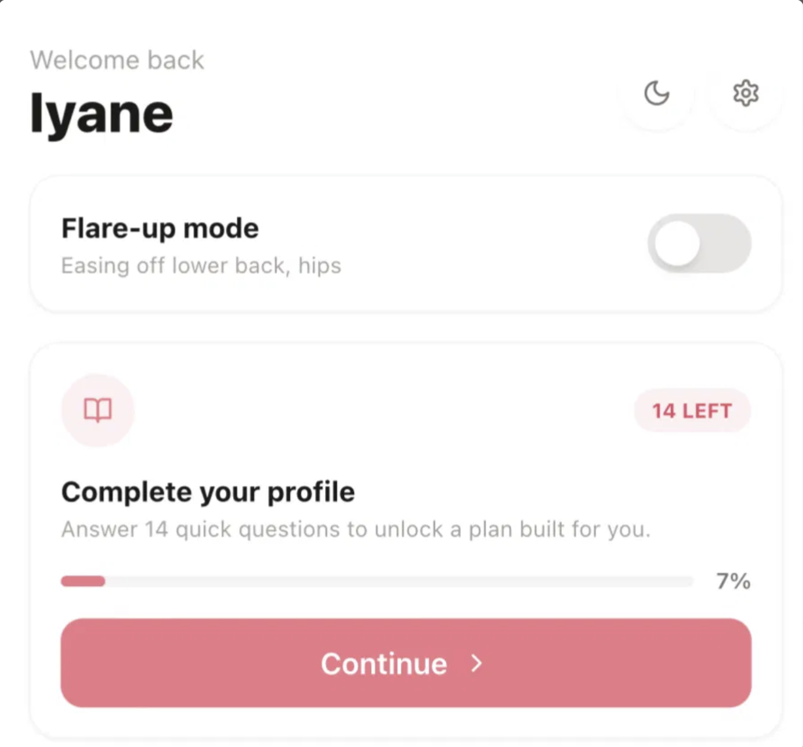
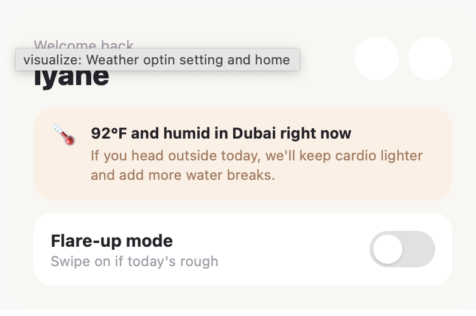
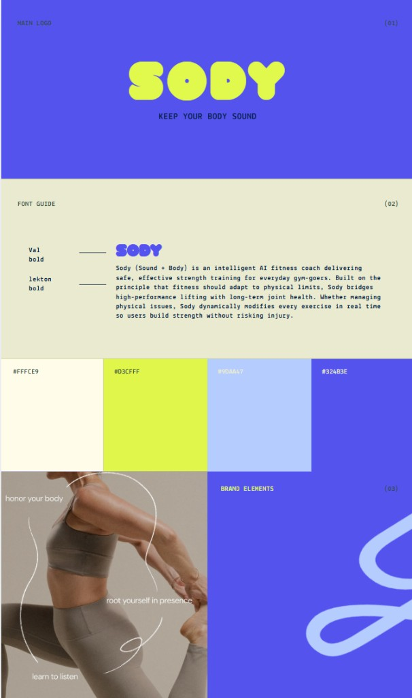
#FFFCE9
#D3CFFF
#90AA47
#324B3E
Royal blue (from artwork)
Lime (from artwork)
Light + dark variants, every screen. Theme = System/Light/Dark.
Skeleton-first on primary surfaces; the AI "thinking" state is a feature (10–30s waits must feel alive).
Copy-led with exactly one CTA. New users see these first — they are the app.
Every AI failure has retry / fallback; never a dead end.
OS text-size compliance without clipping; reduce-motion variants of every celebration.
Health data never public. Streak hidden everywhere public when weekly-activity is off.
docs/design/irene/sody-user-stories.md (versioned; we sync Trello decisions back in).docs/design/irene/sody-design-brief.html.docs/design/irene/assets/research/.